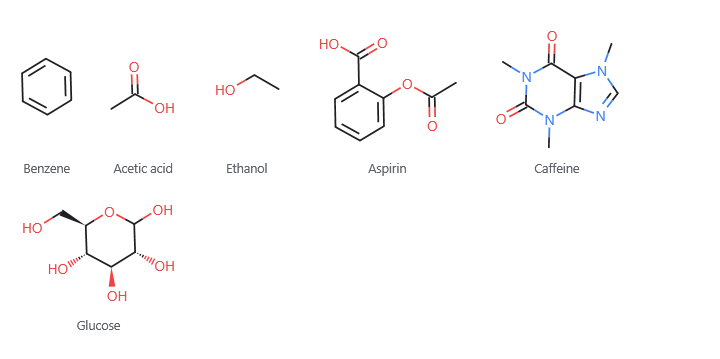
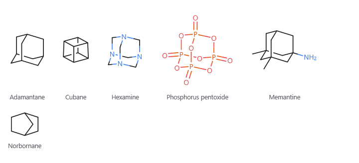
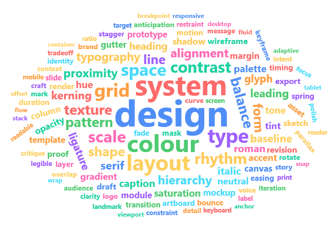
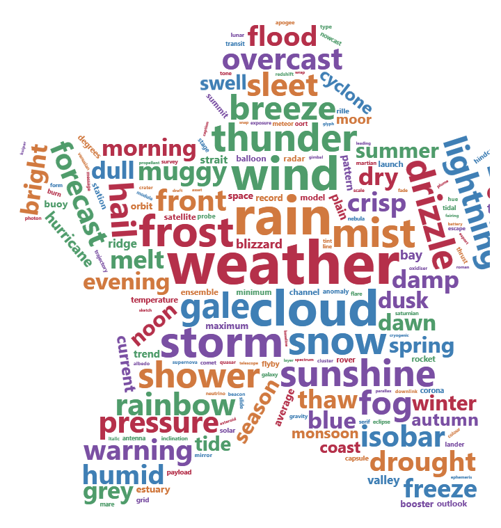
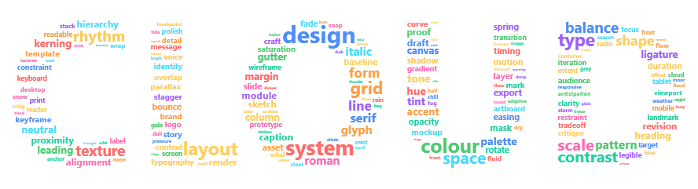

Chemical structures
A fenced smiles block draws molecules from their SMILES strings — one per line, with an optional
caption in double quotes. The word chemistry may open the block, and a line starting with # is a
comment:
```smiles
chemistry
c1ccccc1 "Benzene"
CC(=O)O "Acetic acid"
CCO "Ethanol"
```

Structures are drawn the way a chemistry textbook draws them: carbon as the corner where bonds meet, every other element as its symbol in its usual colour, with its hydrogens written beside it. Aromatic rings get alternating double bonds, and several molecules in a block flow across the page.
| You write | You get |
|---|---|
CCO |
atoms side by side are bonded; hydrogens are filled in for you |
= # |
a double or triple bond |
CC(C)CO |
a branch in round brackets |
c1ccccc1 |
matching digits close a ring; lowercase letters make it aromatic |
[NH4+] [13CH4] [Fe+2] |
an atom in square brackets with its hydrogens, charge or mass number |
N[C@@H](C)C(=O)O |
a stereocentre, drawn with a wedge |
C/C=C\C |
which side of a double bond each end goes on (here, cis) |
[Na+].[Cl-] |
a dot separates molecules drawn side by side |
Cages
Some molecules are closed cages whose rings share several atoms — adamantane, cubane, hexamine, phosphorus pentoxide. No flat drawing shows these, so they are drawn the way a textbook draws them: as a picture of the solid seen from a slight angle, with a bond at the back broken where it passes behind one at the front. A bicycle that reads clearly flat, like norbornane, stays flat.
```smiles
C1C2CC3CC1CC(C2)C3 "Adamantane"
C12C3C4C1C5C2C3C45 "Cubane"
O=P12OP3(=O)OP(=O)(O1)OP(=O)(O2)O3 "Phosphorus pentoxide"
```

When it can't be drawn
A string that cannot be a molecule still draws as much as it can, with the reason in red beneath and a
wavy line under the atom at fault — a carbon with five bonds, a ring number that never closes, or an
aromatic ring that cannot alternate. The most common one is a five-membered ring's nitrogen written n
when it carries a hydrogen: write it [nH], as in pyrrole, c1cc[nH]c1.
A structure is read-only on the page, but you can select across it and copy the SMILES it was drawn from.
Word clouds
A fenced wordcloud block packs words into a picture, each set at the size its weight comes to. Every
line is something: value. Settings go at the top; the first word ends them, and from there every line is
a word and what it counts for — so a cloud can count shape, scale or colour without losing its
shape. A line starting with # is a comment:
```wordcloud
WPF: 120
XAML: 96
MVVM: 74
tabs: 61
terminal: 55
markdown: 50
```

The heaviest word goes in first and takes the middle; the rest fill in around it, each dropping into the first gap it fits. Words are fitted by the shape of their letters, not by the box around them, so a short word slides under a capital's arm — which is what makes a cloud look like a cloud rather than like a wall.
A cloud needs words. A dozen of them is a dozen words with space around them; it takes a hundred or
more before the packing has anything to pack, and a few hundred before a shape: reads as one.
The picture is what was drawn. width: and height: say how much room the packing may use, not how
big the picture is: it is trimmed to the words, so a handful of them is a small picture rather than a few
words marooned in the middle of the page. With no width:, the cloud is given the column it sits in.
Shapes, turns and colours
```wordcloud
shape: star
scale: log
rotate: 0.15
color: #b5304a #d1793f #3f7fb5 #4f9c6b #7a4fa3
weather: 1200
rain: 715
cloud: 528
```

| You write | You get |
|---|---|
shape: star |
the outline the words are packed into: circle, cardioid, diamond, square, triangle, triangle-forward, pentagon, star. Nothing is clipped — the words simply run out where the outline is, so the shape shows best with plenty of words |
letters: CLOUD |
pack the cloud into the shape of those letters instead |
mask: heart.png |
pack it into the shape a picture holds — its opaque part if it has transparency, its dark part if it has not. The picture is found beside your document, exactly as  would find it |
rotate: 0.3 |
the share of the words turned, from 0 to 1. They take any angle between minRotation: and maxRotation: (-90 to 90 by default); rotationSteps: 2 gives the tidier look of words either level or on their side, and nothing in between |
color: theme |
the app's chart colours, taken in turn — so the cloud follows your theme. Write colours instead (#b5304a #3f7fb5) to use those, or random-dark / random-light to scatter them |
background: #101010 |
what the picture is drawn on. Without it, the page shows through |
minSize: 12 maxSize: 72 |
the sizes the lightest and heaviest words are set at. Everything between is spread by scale: — sqrt (the default), linear or log for counts spread over orders of magnitude |
font: Georgia bold: no |
the face the words are set in |
gap: 4 |
clear air kept around every word. gridSize: is how finely the letters are fitted — smaller packs tighter and takes longer |
seed: 7 |
the same block always draws the same cloud; change the seed to shuffle it into a different arrangement |
If the very first word is named like a setting, write it in quotes — that makes a word of it wherever it stands:
```wordcloud
shape: circle
"shape": 40
"color": 34
```
Letters and pictures
shape: bends the cloud towards an outline. letters: and mask: do something stronger: they mark out
where the words may go at all, so the cloud fills a shape rather than merely tending towards one.
```wordcloud
letters: CLOUD
minSize: 4
maxSize: 30
scale: log
design: 900
system: 594
colour: 456
```

Keep maxSize: well down when you do this — the words have to be small against the letters, or there is
nothing left of the shape to read. mask: works the same way with a picture: draw your shape in black on
white (or as a transparent PNG), put it beside the document, and name it.
You can type into it. Click into any word in the picture and edit it where it stands — the block follows. The weights are not drawn, so those are edited in the block's source.
When it can't be drawn
A weight that is not a number leaves a wavy line under that line and the rest of the words still draw; so does a word there was no room left for, because a word silently missing from a cloud is a word you would believe was never counted. A setting given something it cannot take — a shape that does not exist, a width that is not a number — stops the block being a cloud at all, and it shows its own lines with the reason.
Correlation plots
Four fenced blocks draw a table of values against a pair of axes: scatter, bubble, heatmap and
density2d. They are written the same way, so anything below works in all four.
The smallest plot is two columns of numbers. The first is across, the second is up.
1.2 3.4
2.5 5.1
3.1 6.8
Name the columns with a first row that is words rather than numbers, and the names become the axis titles. Spaces or commas separate cells alike.
weight mpg
2620 21.0
3440 18.7
1615 30.4
Settings go above the table, one key: value to a line. The first row of the table closes them, so
a column headed size is still a column. A # starts a comment.
A setting that names a column maps it; anything else applies to every mark. So colour: origin tells
your groups apart, and size: 4 sets the size of all of them.
| To | Write |
|---|---|
| name it | title: subtitle: caption: xTitle: yTitle: legendTitle: |
| say where the marks go | x: y: |
| tell groups apart | colour: shape: group: — a column name, or a colour or mark name |
| size the marks | size: — a column name, or a number; sizeRange: 4 28 |
| fade or name them | alpha: a column or a number, alphaRange: 0.2 1; label: a column to name each mark |
| unstack them | jitter: 0.4 — moves marks off their place so equal rows stop hiding each other |
| shape the panel | aspect: 1 for square, flip: true to swap the axes |
| draw something else | geom: point, tile, bin2d, hex, density2d, corr |
| split it into panels | facet: a column, facetCols: 3 for how many across |
| fit a line through them | fit: lm or loess, with se: true for the band |
| report the correlation | stats: r r2 n p, and method: pearson, spearman or kendall |
| change an axis | xScale: log, xLimits: 0 100, xBreaks: 0 50 100, grid: none |
| change the colours | palette:, gradient: viridis, midpoint: 0, legend: bottom |
A correlation, with the line and the figures:
title: Weight against fuel economy
fit: lm
stats: r r2 n
weight mpg
2620 21.0
3440 18.7
5250 10.4
1615 30.4
1935 27.3
A correlation matrix is a heatmap whose rows are each one cell wider than the header — which is how
you would write one anyway. midpoint: 0 makes the colour mean the sign.
gradient: rdbu
midpoint: 0
fillLimits: -1 1
labels: true
mpg hp wt
mpg 1.00 -0.78 -0.87
hp -0.78 1.00 0.66
wt -0.87 0.66 1.00
Or let it work the matrix out for you. Give a heatmap your observations and geom: corr, and every
numeric column is correlated with every other — method: choosing which coefficient, labels: true
writing each one on its tile. A tile is worked out rather than written, so it is drawn but not typed
into; the column names down its two axes are.
One column too many to read at once? facet: splits the plot into a panel per value of a column,
with facetCols: saying how many stand side by side. Every panel is drawn on the same scales, so they
can be read against one another, and a fit is worked out per panel from that panel's own rows.
Too many points to see? geom: hex counts them into bins instead, and a density2d block draws the
shape of the cloud — contour: bands, lines or raster, with points: true to show the rows through
it.
The axis shows everything drawn on it. Ask for a fitted line with se: true and the axis opens out
far enough to show the whole confidence band — it is part of the answer, not decoration. Write yLimits:
and you get exactly the ends you asked for instead. With group: you get a line per group, each with its
own colour, so you can tell overlapping bands apart.
You can type into it. A value drawn on a tile is the one you wrote, so clicking into it and typing changes the block. Clicking a point selects the row it came from. A number the plot chose — a tick, a coefficient — is not something you can type into, and a value that will not read is underlined where it stands while the rest of the plot keeps drawing.
Back to Markdown.